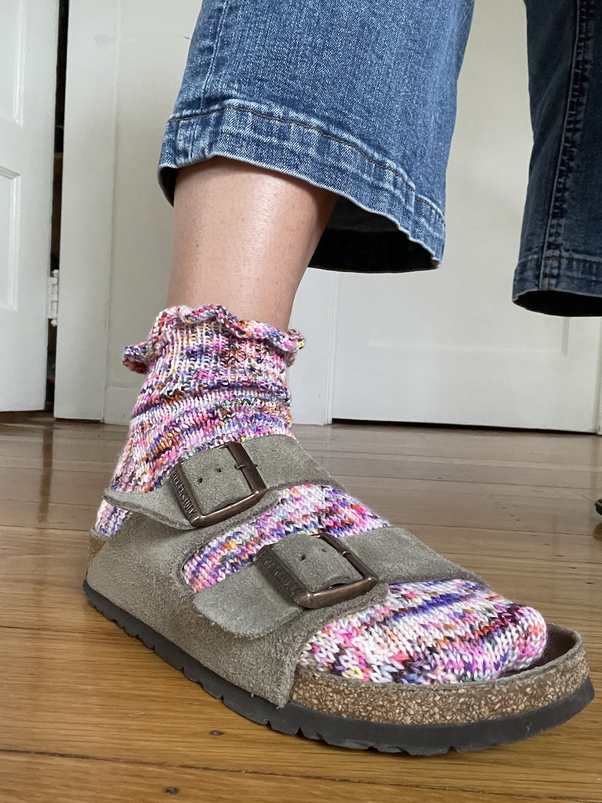

All the Frills Socks 🧦
On how I overcame second sock syndrome 🙏

Phew! I did it! I know that other knitters enjoy socks because they are reliably short projects and so delightfully portable, but I struggle with them!
It’s that mental hurdle called second sock syndrome. Have you heard of it? Second sock syndrome is where the knitter crosses the finish line on sock #1 and feels jubilant at their great accomplishment. The will to pick up the needles and start over for sock #2, however, disappears and remains nowhere to be found.
I feel like second sock syndrome is another one of those knitting things that can teach us about how we approach many other tasks in life. The insurmountable-ness of sock #2 reminds me of how I felt after passing in a big project or closing Zoom after a job interview I spent lots of time preparing for. It is really hard to have the momentum to start another big goal!!
With socks, I find that the momentum comes from breaking sock #2 into small, achievable tasks. This might be obvious, but something about telling my brain that I’ll “just cast on the stitches” makes the ankle, then the heel, then the foot and the toe all come faster :)
For more about the actual features of THESE socks, you should know that the top-down frill was new to me. I’ve knit frills on scrunchies before, which start from the smallest circumference and gain stitches as you knit. This pattern started with a ton of stitches and decreased quickly to achieve the frill effect. Same architecture, different order of operations!
This is the second pattern I’ve knit from Summer Lee. I also knit her Thicksgiving socks. I am always so struck by her beautiful photography and simple, yet striking patterns. She’s been an inspiring person to follow on Instagram and her work generally makes me think a little more about color and cleanness in my work.
The yarn is more crazy than the more muted and earthy colors I like to wear, but I went into the local yarn store where I grew up, and the quirkiness of this skein just spoke to me!
I am wet blocking these as I write, and I am NERVOUS. I did not to a swatch (I know I am stupid for this. Someday I will learn….), so we will see how the fit is altered. I’d say they were a bit loose when finished so hopefully they’ll fit a little more snugly after blocking? Or maybe I am a delusional optimistic!
- Check out my Ravelry page for this project!
- Pattern: Shorty Sock Set
- Designer: Summer Lee
- Yarn Used: Threadhead Knits Co. Plump Sock
- Colorway: Vinyl’s Not Dead
- Recipient: Me ❣️